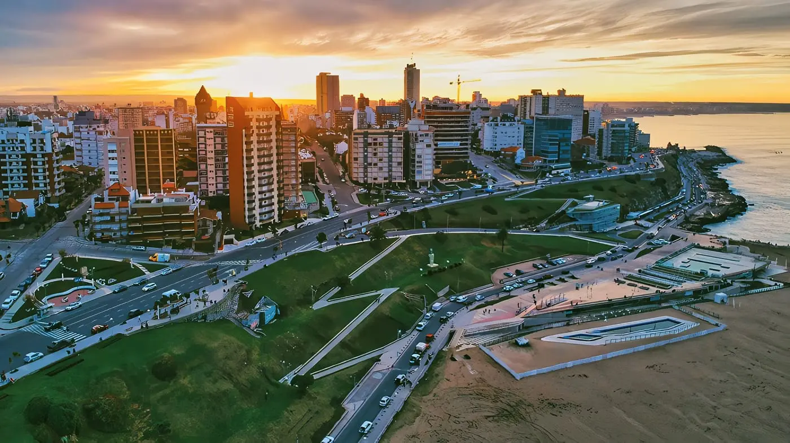

Mar del Plata es una ciudad ubicada en el sudeste de la provincia de Buenos Aires, Argentina, sobre la costa del mar argentino. Es la cabecera del partido de General Pueyrredón, un importante puerto, la localidad balnearia más importante del país y el segundo destino turístico después de Buenos Aires.
Fue fundada con su nombre actual el 10 de febrero de 1874 por Patricio Peralta Ramos, en una estancia de su propiedad, sobre la base de la segunda de las tres extintas misiones jesuíticas de la Pampa, fundadas en la segunda mitad del siglo XVIII, denominada Nuestra Señora del Pilar de Puelches, que más tarde recibió el nombre de «Puerto de la Laguna de los Padres».
Las principales industrias son la pesquera, la turística y la textil. La pesca, actividad principal del puerto, se complementa también con barcos petroleros y cerealeros. La ciudad cuenta también con una base naval de submarinos. Entre la gran variedad de industrias, se destacan también las derivadas de la horticultura, la construcción, la metalúrgica y la mecánica.